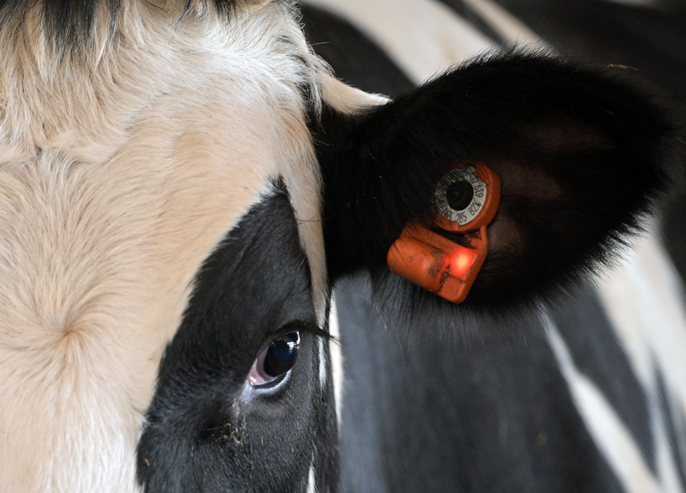

Google Play users mention account setup trouble and automatic Spanish mode. Add first-run and saved-language checks before the app reaches farm users.
Prepared for Jason Ball
Helping CowManager scale real-time herd software without slowing farm work
Why we're here: CowManager is hiring .NET backend talent for Azure sensor data, microservices, serverless work, and code quality. That points to a clear scale moment, not just one open seat.

Our read
Your .NET role says CowManager is scaling real-time sensor data in Azure. The hard part is keeping farm workflows simple while the platform adds Milk Sensor data, Find my Cow actions, and many herd system links. Recent Android reviews point to friction in login, language state, speed, tag linking, and graph clarity. If those flows stay rough, farmers may trust alerts less. Jason's team likely needs extra delivery capacity without lowering code quality.
Where we'd start
Your latest app notes mention offline detection and stick reader support. Test cached screens, tag linking, and reader flows together before field support sees them.
What we'd do
We would run a dedicated squad under your Product Owner. The pilot stays small, visible, and tied to your two-week sprint rhythm.
Team shape
One senior .NET engineer, one Azure DevOps engineer, one QA automation engineer, with shared tech lead review.
- .NET Backend
- Azure DevOps
- QA Automation
- Tech Lead
Map risk paths
Trace login, alerts, tag linking, language state, offline pages, and Find my Cow events through app and API.
Add release checks
Build contract tests for graph payloads, alert payloads, language persistence, and cached-screen behavior before each sprint demo.
Harden Azure flows
Review high-volume sensor services for retries, queues, CosmosDB usage, logs, and clear production handoff points.
Ship a visible fix
Close one farmer-facing issue, then leave the team with tests and dashboards they can keep using.
Relevant stack
- C#
- .NET 6+
- Azure
- CosmosDB
- MS SQL
- Docker
Who is Elinext
Proof

QA and Data Analytics in Pharma Industry
Validated raw cattle-device data before analytics and prediction models.
Read the case study
Real-time Data Insights of Machines Performance
Built live operational data flows for industrial users.
Read the case study